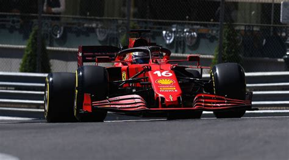
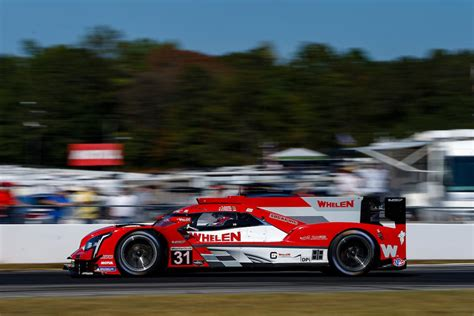
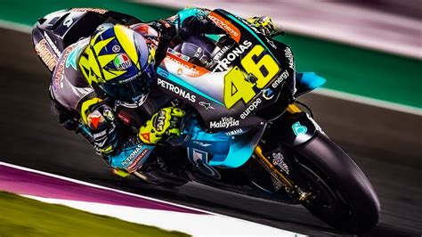

Grand Prix de Monaco Cerca
La esperada carrera del gran premio de monaco esta cada vez mas cerca! Hace un ano que no se compite en este circuito!

Gran premio de Le Mans cada vez mas cerca
Este fin de semana se disputara el Gran premio de Le Mans, la fanaticada ya muestra sus ansias para que el tan esperado dia Jueves empiecen las pruebas libres.

Portugal ofrece una carrera cerrada
Podra Valentino Rossi ganar el Gran Premio este fin de semana? Marc Marquez podra recuperarse?
